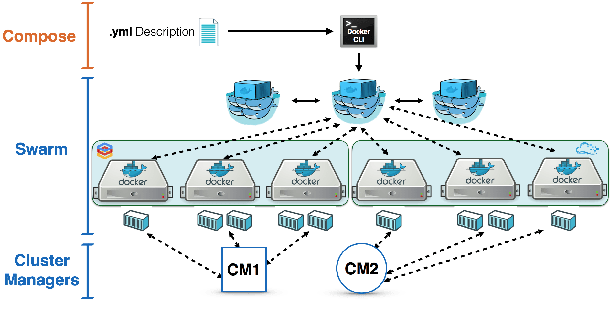

Docker Swarm

Clash of the Orchestrators
Hi, my name is Tom.
@tomverelst
Developer @ Ordina Belgium
https://ordina-jworks.github.io
Docker Swarm
Demo

Conclusion
Swarm = Native
~75% of the native Docker commands are implemented
Target is 100%
Lightweight
Run other orchestrators on top of Swarm
(Kubernetes, Mesos, ...)
Pluggable
Volumes
Networking
Authorization
Log Driver
Cluster Driver (experimental)
High Availibility
Replicate Managers
$ docker run \
-d swarm manage \
--replication \
...Rescheduling
Restart policies
always
unless-stopped
on-failure
no
Rescheduling
(experimental)
on-node-failure
Load Balancing
Command / Template / Key Value Store
Docker Events / DNS / Discovery
Labels
Image
LABEL version="1.2.3"Command Line
$ docker ps --filter \
"label=version=1.2.3"Daemon (Node)
$ docker daemon \
--label \
"version=1.2.3"Container
$ docker run --label \
"label=1.2.3"Filters
Node
Constraint
Health
Container
Affinity
Port
Dependency
Final question...
Swarm in production?

Resources
Advanced Docker and Orchestration (Jérôme Petazzoni) - http://view.dckr.info/
Thank You!